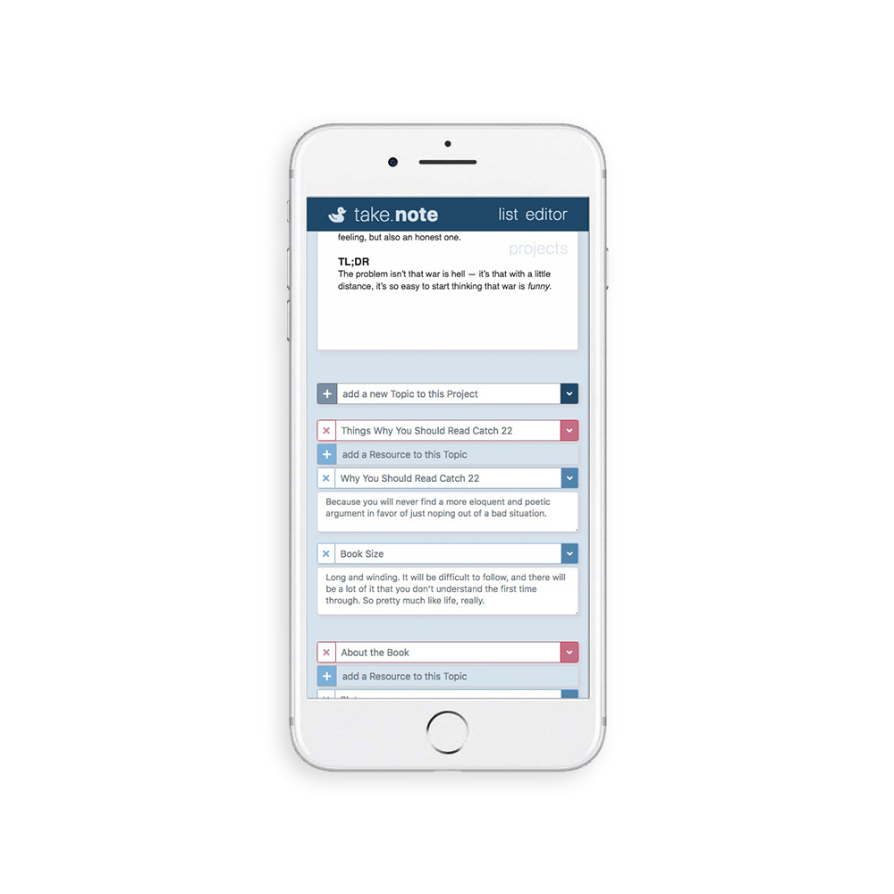
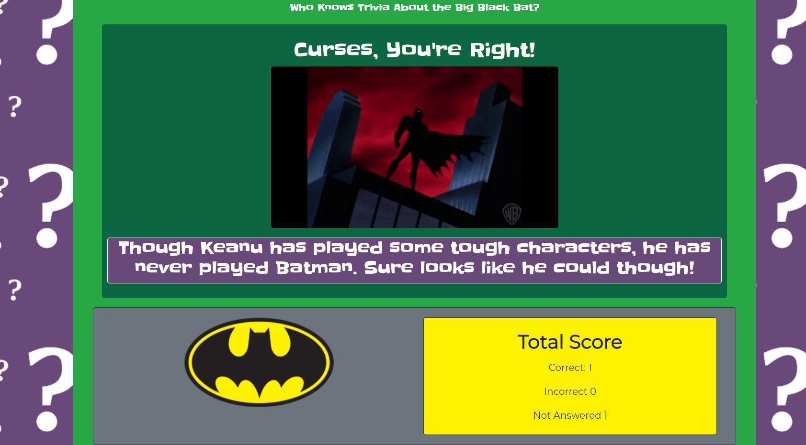

A Responsive RESTful MVC Project Composition and Content Organization Web App built with Node, Express, Handlebars, HTML, CSS, Bootstrap, JavaScript, jQuery, MySQL, Sequelize and Quill.js word processor.
Keep all your notes organized alongside your project document in a take.note's integrated workspace. Keep all your projects together in one place you can access online from any device. take.note can help you write books, papers, speeches, screenplays, apps, project planning, and more--anything that requires a final formatted document using multiple content sources.
What is Food·ie? Food·ie is an application designed to simplify finding and cooking recipes. It was developed using the Spoonacular and Google Maps API's to populate data. Bootstrap was used for styling. For the main logic behind the app, jQuery and Javascript were used. Print.js was used to add a printing functionlity for the recipes.
How Does Food·ie Work? This app was designed with the intention of making life easy for the user. The user picks out their favorite recipes one at a time and compiles a shopping list for all the ingredients. Then the user can take that shopping list and see where the closest stores are.
The Riddler's Batman Trivia is a timed quiz game styled with Bootstrap, and programmed with JavaScript and jQuery. Timing events were written in JavaScript, and jQuery was written to manipulate the DOM.
The game is a timed Batman-themed trivia quiz with 10 questions. One question is displayed on the screen at a time, along with the timer, which is set to 20 seconds on each question. If the player answers correctly, a congratulatory message is displayed for 10 seconds and then the game proceeds to the next question without user input. If the player fails to answer a question correctly, or within the time limit, a negative message is displayed for 10 seconds and then the game proceeds to the next question without user input. Correct answers, incorrect answers, and questions not answered due to running out of time are all logged on screen for the player to be able to track their performance. At the end of the game, the player wins if they answer 7 or more questions correctly. The message and music that plays at the end of the game depends on the player's performance. The player has the option to click a button to reset the game once it is over.
Super Smash Bros. Memory is a memory game created using React. The user clicks on an image and will continue to earn points until they click an image they have already clicked. Once this happens, the game is reset. The high score of the user is kept track of once the first game is finished.